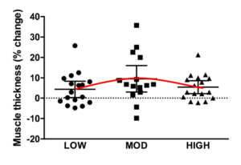

Progressive overload is a well-established principle for achieving continued progress in resistance training programs. In general terms, progressive overload can be defined as consistently challenging the neuromuscular system beyond its present capacity. It’s commonly accepted that this...
Brad Schoenfeld, Ph.D, C.S.C.S., is an internationally renowned fitness expert and widely regarded as one of the leading authorities on body composition training (muscle development and fat loss). He is a lifetime drug-free bodybuilder, and has won numerous natural bodybuilding titles.
Evidence indicates a dose-response relationship between resistance training volume and muscle hypertrophy, with higher volumes (up to a certain point) leading to greater growth responses. However, this evidence is specific to a program intended for optimal muscle-building; when cutting, it is often advised to reduce training volume to facilitate recovery and thus sustain performance over time (and perhaps avoid overtraining).
While dogma on the topic has been generally accepted in bodybuilding circles, the theory is based primarily on logical reasoning (and in some cases, overextrapolation of research that did not involve an energy deficit). Accordingly, our group previously decided to delve into the literature and carry out a systematic review to draw more objective conclusions. Contrary to popular claims, our extensive review of literature found no compelling evidence of a benefit to decreasing resistance training volume during a cut phase, and some evidence even seemed to suggest a potential detriment to volume reduction for sparing lean mass (see my write up on the paper here). While this raises cause for skepticism, the findings were based solely on correlational evidence, which limited the ability to draw causal inferences; no study had directly compared the effects of higher versus lower volumes during a controlled energy deficit.
For those who want the consumer-friendly version, here’s the scoop…
What We Did We assigned 38 young, resistance-trained men to initially perform a one-week moderate volume deload phase arranged in an upper-lower body split routine format. Training consisted of 3 sets per exercise for large muscle groups and 1 set per exercise for the arms and calves; each body region was trained twice per week with a target loading zone of 10 reps per set.
We then randomized the participants to either continue training with the deload routine or to perform a higher volume protocol (5 sets per exercise with 3 sets per exercise for arms) over a 6-week mesocycle. For the quadriceps, volume amounted to 20 sets per week for the higher volume group and 12 sets per week for the moderate volume group.
During the deload phase, we instructed participants to consume a weight maintenance diet (45 kcal/kg/day). For the intervention period, we prescribed a hypocaloric diet (30 kcal/kg/day) so that participants would achieve an energy deficit for the purposes of weight loss. Protein intake was set at 2.8 g/kg/day fat-free mass with consumption of the remaining calories from carbohydrate and fat left to individual preference. Participants provided daily self-reported nutritional info via an online app, allowing us to track dietary compliance.
We assessed muscle thickness of the rectus femoris at two sites (50% and 75% of femur length) via B-mode ultrasound and body composition via multi-frequency bioelectrical impedance analysis. In addition, we assessed subjective measures of sleep duration, sleep quality, and state of mood using questionnaires.
What We Found
Both groups lost an average of 1.7 kg (~4 pounds) during the 6-week hypocaloric diet, with lean mass accounting for ~30% of these losses in the higher volume group and ~52% in the moderate volume group. Muscle thickness measures of the rectus femoris essentially did not change across the study period for either the higher or moderate volume condition. Subjective measures of participants’ sleep duration and quality did not change throughout the study period, nor did their state of mood.
What are the Practical Implications of Findings
The results of our study indicate that resistance training volume has neither a beneficial nor detrimental effect on muscle development during a cutting phase. The body composition data showed a slight loss of lean mass for both groups despite a relatively high protein intake (~2.8 g/kg/day of fat-free mass). However, the amount of these losses were within the margin of error of the measurement, and thus likely of little practical meaningfulness. Indeed, direct site-specific measures of muscle growth did not show appreciable changes for either condition. On the surface, the results seem to suggest that you need to be at least at caloric maintenance (or perhaps in a surplus) to take advantage of higher training volumes from a muscle-building standpoint.
Intriguingly, subjective measures of sleep and mood were unaltered by training volume. Participants in both groups rated their sleep quality as “moderate” and neither group reported issues with sleep disturbance. Similarly, indices of mood were generally unchanged over the course of the intervention, irrespective of group allocation. When taken as a whole, these results indicate that relatively high training volumes are well-tolerated during periods of energy restriction and do not negatively affect performance, at least over a relatively short mesocycle. This seemingly refutes the claim that volume needs to be reduced while cutting.
While our study provides preliminary evidence as to the effects of training volume during a cut phase, there are still many questions left to be answered. These include:
***We only measured hypertrophy at two sites on the rectus femoris. What about other muscles? Perhaps the upper body may respond differently than the lower body? Or perhaps the other quad muscles may respond differently than the rectus femoris?
***Our sample was comprised exclusively of young men. What about other populations? Our previous review on the topic suggested that women seem to retain more lean mass with higher volumes compared to males. Perhaps aging may have a modifying effect as well. Evidence indicates that older individuals require more recovery, which in turn may warrant alterations in training volume.
***Our protocol involved a relatively high vs relatively moderate volume program. What about programs with higher or lower volume protocols? Would more extreme volume variations perhaps produce different results?
***We employed a relatively modest caloric deficit, with subjects losing ~3/4 pound of weight per week. What about a larger deficit? It is not uncommon for people to target 1 to 2 pounds of weight loss per week during a cut phase, but it’s unclear if/how volume may affect such practices.
***Participants in our study were relatively lean (baseline body fat percentage in the high teens). What about lower body fat levels? Previous research from our lab (https://pubmed.ncbi.nlm.nih.gov/33105363/) indicates that losses in lean mass rise exponentially when body fat dips below ~10%. Could volume have an impact on these losses, either positive or negative?
All of these limitations cloud our ability to draw strong inferences on the topic and thus warrant further investigation.
Take-Home Conclusions:
Our findings provide preliminary evidence that resistance training volume does not influence body composition changes during a relatively brief (6 week) cut phase. The results suggest that volume can be reduced during such a phase without having a detrimental effect on lean mass. Alternatively, there are no benefits to decreasing volume (other than better time-efficiency), as the lower volume protocol did not improve results or enhance subjective measures of sleep and mood. Importantly, we need to be cautious in drawing strong conclusions on the topic. Given the limitations of the study, this should be considered an initial piece in the puzzle that requires follow-up studies to fill in the gaps in our knowledge. Stay tuned…
The bodybuilding community is forever seeking to develop advanced training methods that enhance muscle growth. Loaded stretch has long-been proposed as a potential strategy to increase gains. My close friend and colleague, the late, great John Meadows, was a huge proponent of including loaded stretch as a component in bodybuilding program design. Commonly, but not always, this practice is incorporated into the inter-set rest period between sets of an exercise.
Research in animals has consistently shown a benefit to loaded stretch protocols. However, there have only been a few human studies to date that attempted to investigate the topic in a controlled fashion. Thus, our lab decided to conduct a study to determine if loaded stretch performed between sets in a resistance training routine influences muscular adaptations in the calf muscles. The study, Loaded inter-set stretch may selectively enhance muscular adaptations of the plantar flexors, was recently published in PLoS One (and is open-access so that all are able to read for free).
For those who want the consumer-friendly version, here’s the scoop….
What We Did
The study was led by my master’s degree student, Derrick Van Every, with support from our terrific team of research assistants. To reduce potential confounding from genetic and lifestyle factors, we employed a within-subject design where all participants performed both conditions during the same session in counterbalanced fashion. As such, we randomized the legs of young, untrained men to perform 4 sets of straight- and bent-knee calf raises with 2 minutes rest between sets. One of the participants’ legs rested passively during the rest period (consistent with traditional training protocols) while the other leg descended into a loaded stretch (i.e., dorsiflexion) immediately after the end of the set. The stretch condition was held for 20 seconds and then participants rested passively for the remaining duration of the rest interval. Each set targeted 8-12 sets carried out to volitional failure. The training component of the study lasted 8 weeks.
To determine if the strategy influenced hypertrophy, we assessed pre- to post-study changes in muscle thickness of the calf muscles (lateral and medial gastrocnemius, as well as the soleus). We also measured changes in isometric strength with the knees straight and bent.
What We Found
Soleus hypertrophy was modestly greater for the loaded stretch condition. The magnitude of effects ranged from negligible to relatively substantial compared to passive rest (~9% greater). The lateral gastroc showed a slightly advantageous effect for loaded stretch, but the range of values were of questionable practical meaningfulness. The medial gastroc showed neither a benefit nor detriment to loaded stretch.
Somewhat surprisingly (at least to me), strength was modestly enhanced by loaded stretch. The effects ranged from negligible to potentially meaningful (?10% of the baseline strength).
What are the Practical Implications of Findings
Our study suggests that adding brief (20 seconds) loaded inter-set stretch bouts to a resistance training program may in fact promote modest improvements in muscle growth, perhaps specific to certain muscles more than others. In addition, there may be modest improvements in muscle strength as well. Interestingly, the beneficial effects occurred despite a decrease in volume load (sets x reps x load) of ~5 to 12%.
Previous research shows conflicting results on the value of intense inter-set stretch, with some studies indicating a hypertrophic benefit and others not. Although it’s difficult to speculate on the reason(s) for these discrepancies, it’s interesting to note that our study found that beneficial effects were greatest in the soleus muscle. The soleus is a slow-twitch dominant muscle, comprised of ~80% type I fibers. It’s possible that type I fibers may be more anabolically responsive to the higher time-under-tension compared to type II fibers. It also is possible that these fibers may have additional inherent properties predisposed to loaded stretch following performance of eccentric actions (e.g., differences in muscle architecture). Of note, research in animal models also tends to show greater gains in slow-twitch dominant muscles. Alternatively, the results may simply be a chance finding that occurred irrespective of fiber type composition. Replication is needed to provide more insight on the topic.
A limitation of the study is that participants were untrained men. This population was chosen so that we could isolate training only the calves without confounding from other multi-joint leg training (e.g., compound lower body exercises involve plantarflexion); it would have been near impossible to recruit trained subjects willing to give up training their thighs for a couple of months. Thus, it remains to be determined if similar results are achieved in trained individuals as well as in women. In addition, the findings are specific to the calf muscles; we cannot necessarily extrapolate similar results in other muscles of the body. Each study is but a piece in the puzzle of theory development, so further research is needed to better understand the nuances of the topic.
Take-Home Conclusions
From a practical standpoint, loaded stretch performed between sets may be a viable strategy to increase muscular development. Based on our findings, the improvements are relatively modest and their practical meaningfulness would depend on your ultimate goals (e.g., more relevant to those interested in bodybuilding vs general fitness). Although speculative, benefits may be best achieved when the stretch is performed immediately after the final eccentric action to take advantage of the associated passive force enhancement effects on the muscle .
I’d note that the strategy employed in our study did not increase the duration of the workout, making it a time efficient option. Given that there does not seem to be a downside to inclusion of loaded inter-set stretch, it’s a strategy worth experimenting with if your goal is to maximize gains.
Our recent meta-analysis helps to lend perspective on the topic, providing some practical insights as well as highlighting gaps in the literature that preclude our ability to draw strong conclusions. In this post I’ll delve into our meta-analytic findings and offer some key takeaways for program design.
We then carried out a robust variance meta-analysis model to determine potential hypertrophic differences between single- and multi-joint exercises. We also subanalyzed studies based on whether they equated the number of sets per exercise per muscle group to assess if training volume had confounding effects on muscle growth.
What We Found We identified 7 studies that met inclusion criteria. Our basic meta-analysis found similar gains in hypertrophy for both single- and multi-joint exercises. The relatively trivial confidence intervals of the effect size (-0.07 to 0.25) indicate that any differences would be of little practical relevance. Subanalysis failed to reveal that training volume had any effects on outcomes.
What are the Practical Implications of Findings Looking purely at the meta-analytic findings, it would seem there’s no difference between performing single- vs. multi-joint exercises from a hypertrophy standpoint. If true, this would mean that you could simply rely on compound movements to get huge and hence save a good amount of time in the gym since multi-joint exercises are more time-efficient choices.
But hold on…
As often is the case in research, there are important gaps in the literature that must be taken into account from a practical standpoint. First and foremost, 6 of the 7 studies looked at biceps or triceps hypertrophy; the other study looked at the quads. Thus, no research has been done into the effects of multi-joint exercise on muscles such as the delts, glutes, hamstrings, and calves, among others.
Why is this an issue?
Well, evidence indicates preferential hypertrophy of the rectus femoris in the leg extension (a single-joint exercise) compared to the squat. This suggests that combining single- and multi-joint lower body exercises may have a synergistic effect on quad development. Moreover, research shows negligible growth of the hamstrings during the squat, suggesting that direct hamstrings exercises (e.g., leg curls, stiff-leg deadlifts, etc) are necessary for complete development of this muscle; logic would dictate this would also be the case for the calf muscles, which receive relatively little stimulation during compound lower body movements. Although studies on deltoid hypertrophy are lacking, both applied anatomy and EMG research indicate that shoulder presses focus primarily on the anterior head of the muscle; to work the middle and posterior delts would thus require targeted single-joint work (i.e., lateral raises and rear delt flys).
In addition, rarely do studies investigate the different heads of the upper arm muscles. One study did in fact show that the bench press (a multi-joint exercise) promoted greater hypertrophy in the lateral triceps head than the overhead triceps extension (a single joint exercise) whereas the overhead extension elicited greater hypertrophy in the long head of the tri’s compared to the bench press. It’s not clear whether the short and long heads of the biceps brachii would see similarly differential responses with the performance of single- versus multi-joint exercise (i.e., curls vs rows), but the possibility can’t be ruled out.
Finally and importantly, no research on the topic to date has assessed growth at multiple sites across a given muscle. Numerous studies have shown that muscles can hypertrophy in a non-uniform fashion, with varying degrees of proximal, mid, and distal growth observed depending on a given training protocol. Although speculative, this raises the possibility that variations in length-tension changes between single- and multi-joint could promote hypertrophy at different aspects along the length of a muscle; we simply don’t know at this point because the topic has yet to be objectively studied.
Take-Home Conclusions:
From a practical standpoint, it’s relatively clear that multi-joint movements promote substantial hypertrophic benefits even in muscles that many people customarily believe require “direct” training (e.g., biceps and triceps). Accordingly, for those who are time-pressed and do not aspire to bodybuilding-type goals, this implies you can construct a routine based solely on multi-joint exercises and derive substantial benefits from a hypertrophy standpoint.
On the other hand, if the goal is to optimize your muscular potential, it appears necessary to include single-joint exercises as part of a comprehensive training program. This will help to ensure that all the body’s major muscles, as well specific subdivisions of a given muscle, are maximally stimulated for development. Program design should focus on integrating applied anatomical theory that takes into account each muscle’s unique composition and function.
It’s common practice for gym-goers to reduce training volume when dieting. I’ve subscribed to this belief for years. After all, the concept seems to have a logical basis: Given that nutrients are involved in both energy production and recovery, a reduction in calories would seemingly make it difficult to adequately perform and recuperate from higher volume programs. Sounds on-point, right?
It did to me. Based on this rationale, I’ve always recommended cutting back on the number of sets performed during periods of a caloric deficit.
But scientific theories continually evolve and our new systematic review of literature has now caused me to reconsider my opinion on the topic. Here’s the scoop…
What We Did:
We systematically searched the literature for studies that investigated lean, healthy, drug-free resistance-trained individuals under conditions of a caloric deficit. Studies had to last at least 4 weeks with subjects consuming a relatively high-protein diet (at least 2.0 g/kg/day). The information from these studies was extracted and coded in a spreadsheet for analysis.
What We Found
A total of 15 studies met our inclusion criteria. When analyzing the data as a whole, there did not seem to be a benefit to reducing the volume of resistance exercise during periods of a caloric deficit. To some extent, the evidence indicated that reductions in volume while dieting may actually have a negative impact on maintaining lean mass, particularly in women.
My Thoughts
Based on the available objective research, our review found no compelling evidence of a benefit to decreasing resistance training volume when dieting. In fact, evidence actually seemed to show a potential detriment to the commonly-held practice for sparing lean mass, although the research in this regard remains rather equivocal. Moreover, the evidence suggests that women seem to retain more lean mass with higher volumes compared to males; possible reasons for this are unclear, although it’s conceivable that discrepancies between the sexes may be related to lighter overall loads used by women or perhaps sex-specific hormonal influences.
Some fitness pros have mistakenly used a study by Bickel et al. as evidence in support of cutting volume during periods of energy restriction. The study essentially showed that young, intermediate-experienced individuals were able to maintain muscle on approximately 1/9 of their previous training volume. An important caveat: The subjects weren’t dieting. Thus, we can’t necessarily extrapolate this data to those in a caloric deficit; in fact, our review suggests these results do not apply during periods of dieting.
With that said, by no means should this paper be taken as nail-in-coffin evidence for employing higher volumes during a caloric deficit. For one, research to date on this topic is limited to correlational evidence. Hence, the inferences are made from independent studies that do not directly compare higher versus lower volumes, which limits the ability to draw strong inferences. Moreover, the reporting of volume was inconsistent in some of the papers, and assessment techniques (e.g., DXA, BIA, ADP, skinfold, etc.) varied between studies. Thus, the conclusions should be considered somewhat preliminary. However, given that there is little evidence of a benefit to cutting volume and a potential benefit to at least maintaining volume for lean mass maintenance, at this point the strategy seems to present a good cost/benefit.
Importantly, the application of research is always specific to the individual. Hence, there are a number of potential modifying factors that need to be taken into account when making practical decisions on the topic for a given lifter. Variables such as training experience, pre-diet RT volume, magnitude of the energy deficit, level of body fat, and concurrent aerobic training all may influence results. And I’d note that when body fat levels get very low (mid-single digits), there tends to be a substantial loss of lean mass regardless of volume. Hence, many things to consider from an evidence-based standpoint on an individual level.
In summary, the available evidence challenges the commonly held opinion that lifting volume should be reduced during a caloric deficit, with some evidence favoring higher volumes in the preservation of lean mass. As mentioned, the research to date is correlational and thus should be considered somewhat preliminary. We have completed data collection on a study that directly investigates the topic in resistance-trained individuals that will further help to fill gaps in the literature; stay tuned….
In Part 1 of this series, I operationally defined mechanical tension and discussed how sensors in the working muscles detect the magnitude of tension from a given resistance to carry out the muscle-building process. However, as mentioned in that post, this doesn’t necessarily mean that heavier is better for gaining muscle. In fact, a compelling body of research indicates that within wide limits, you build as much muscle from training with relatively light weights as you do from heavier loads. While this may seem counterintuitive, there are several possible explanations for the apparent paradox.
First and foremost, mechanical tension inevitably increases as you approach muscle failure in a set. For example, say you are curling a weight that you can lift 20 times (i.e., your 20RM). The first few reps of the lift will be very easy to perform, and thus the tension imposed on the working muscles necessarily will be low. However, as you continue to curl the load, muscle fibers begin to fatigue causing increasingly greater tension on the remaining pool of available fibers. By the last few reps, the working muscle fibers are under a great deal of stress in their effort to complete the movement. In support of this theory, research indicates that fast-twitch fibers are progressively activated as a light-load set nears muscle failure, thus indicating that tension is specific to the level of exerted effort.
So does that mean that only the last few reps of a set matter when training with higher rep schemes?
Not necessarily.
Mechanical tension is present throughout a lighter-load set, even during the initial repetitions, and it is conceivable that other factors may play a synergistic role in the hypertrophic process under conditions of lower tension. For example, metabolites are produced during high rep training that may contribute to hypertrophic gains. Moreover, blood vessels are compressed during repeated contractions, and the corresponding ischemia/hypoxia may be involved in anabolic signaling. We are just beginning to scratch the surface in our understanding of the mechanisms of muscle hypertrophy, with much still to be determined. If you’re interested in learning more on the topic, check out our review paper that discusses what we currently know about potential sensors and stimuli.
Another possibility is that there may be a fiber-type specific response to loading. Some evidence suggests a preferential growth of type I fibers when training with lower loads and a preferential growth of type II fibers from heavier loads. If true, this would potentially “even out” the magnitude of growth when comparing training with higher versus lower loads. It also would suggest the possibility that combining heavier and lighter loads may optimize hypertrophy by promoting maximal growth of both fiber types. I’d note that our recent study did not indicate a fiber type-specific response between moderate- (~6 to 10 reps) and lighter- (~20 to 30 reps) load training of the calf muscles, but certainly more research is warranted to draw stronger conclusions on the topic.
Based on what we’ve discussed, the question then arises: Is there an ideal time under tension in a set to promote gains? Perhaps such a scheme would provide a means to harness the benefits of sufficient mechanical tension while achieving higher volume loads, stimulating the spectrum of muscle fibers, and perhaps taking advantage of other mechanistic anabolic factors? Stay tuned for Part 3 of the series where I delve into the evidence on this topic.
It’s well-established that mechanical tension is the primary mechanism responsible for muscle hypertrophy (i.e., increases in muscle size). Simply stated, mechanical tension can be defined as the stress applied to a muscle, generally (although not exclusively) from an external resistance. Resistance can be applied to the muscle in various forms including but not limited to free weights, cable pulleys, pneumatics, hydraulics and body weight.
Here’s how things play out in practice. Let’s say you perform a set of dumbbell arm curls. During each repetition, the imposed load from the dumbbells place a stress on your arm flexors (i.e. biceps brachii, etc). Receptors in the working muscle fibers (i.e. mechanoreceptors) sense the applied forces and consequently convert the associated mechanical signals into chemical signals via a phenomenon called mechanotransduction. A cascade of intracellular (i.e. within the muscle fiber) enzymes then facilitate anabolic processes from these chemical signals, which drives the synthesis of proteins that build muscle. Numerous anabolic and catabolic pathways have been identified, and the extent of their activation/de-activation ultimately determines how much muscle you build.
Based on the aforementioned information, it may seem that using very heavy weights would necessarily be ideal for maximizing muscle mass; the heavier the better. After all, heavier loads impose greater forces on muscles, and thus there theoretically should be higher levels of mechanical tension created during such training, right? Well, if that were in fact the case, then powerlifting routines would be optimal for bodybuilding. Both controlled research and anecdotal experience in the field tell us that’s not the case.
How can this be?
Intrigued? Then stay tuned for Part 2 of this series, which will delve into the nuances of mechanical tension and discuss why the topic is much more complex than simply focusing on the absolute amount of weight lifted.
The following is the foreword to my book, M.A.X. Muscle Plan 2.0, written by John Meadows. John epitomized what it is to be a fitness pro. Always curious, always learning, always striving to improve himself and those around him. There was no one better at bridging the gap between science and practice from a bodybuilding standpoint. He passed far to soon, but made a huge impact on all those he touched. I consider myself truly fortunate to have known John personally; he will be forever missed. RIP.
2012 was one of my best yet most scary years ever. It was then that I ventured out of the comfortable corporate world at JP Morgan Chase and dove full time into the health and fitness industry. I had grown up a bodybuilder and loved to help others, so this transition was exciting, but scary, as now it was either sink or swim. I was also keenly interested in the science of what makes things happen to our bodies so now I would have more time to devote to learning. I decided to start my own website and figured that interviewing experts would be a great place to start. With a little fear behind me, I decided I had better knock my interviews out of the park so I wouldn’t have to crawl back to Bank and ask for my old job back.
I had been hearing about a guy in New York named Brad Schoenfeld. In fact, I was studying everything he said. I found myself nodding my head as I read his work. It made sense. Much of what I had done had worked in the bodybuilding and nutrition realms, but the truth is, it was more of a gut feeling based on experience then a deep knowledge of the details of why things happen. Brad seemed to be filling in the blanks for me. Oh, this is why this works, this is why this doesn’t work etc. I reached out to him hoping he would have time for a quick interview, and he responded with a quick yes. I was ecstatic. We ended up doing 2 parts because, well honestly, I just wanted to learn more myself, but the side effect was my website followers got some very advanced knowledge dropped on them.
After the interview Brad and I kept in touch and I had begun carrying his “mechanisms of muscular hypertrophy” paper around with me like a bible. I read it over, and over, and over. I wasn’t the only one. Many bodybuilders I knew started referencing his work. If you know the bodybuilding community, you know we can be a bit of a meathead bunch when it comes to accepting “science” or evidence outside of our own personal experience. Somehow Brad was bridging this gap. I kept noticing more and more of my colleagues popping in and asking Brad questions or sharing his work. It helped that Brad has competed as a bodybuilder himself, but what really helped the most, was Brad acknowledging a lot of the good things bodybuilders had done, and when challenging long held beliefs, he did it with class and an obvious good intention in his heart. You can search the bodybuilding community high and low and you won’t find a single successful person that doesn’t respect Brad’s work. This is quite remarkable.
Brad eventually asked me to guest lecture to his class, which was absolutely amazing for me, as having the respect of someone in his league, really meant a great deal. Eventually Brad visited and trained together made videos for my YouTube channel that were wildly popular. I am looking forward to doing more of this in the future with him!
You are in for a treat reading this book. Brad is going to teach you how to think about exercise at a high level, and at a more detailed level. Simply put, you are going to have the information you need, to allow you to build the best program for YOU, and how to reach your ultimate potential!
Few topics in the field of exercise are as controversial as training to failure. Views on the topic tend to be polarizing, with some fitness pros strongly advocating the need to go all-out for optimal muscle adaptations, and others claiming failure training not only isn’t necessary, but in fact may be detrimental to gains.
Who’s right?
Our recent systematic review and meta-analysis provides some answers on the topic, while at the same time raising many more questions. The paper is open access and thus free for all to read, but I think it’s essential to delve beyond the numbers to fully appreciate its practical implications. Here’s the scoop…
What We Did
We searched the current literature to locate all randomized control trial studies that directly compared measures of strength and hypertrophy when carried out to muscle failure versus not to failure. Only human studies with healthy subjects that had a minimum duration of six weeks were considered for inclusion; we excluded studies that used blood flow restriction resistance training or concurrent training interventions (e.g., combined resistance and aerobic training). We then carried out a random effects meta-analysis that pooled results of all included studies to quantify the effects of failure training on muscular adaptations. A subgroup analysis of training status, body-region, exercise selection and training volume was performed to determine their potential influence on results.
What We Found
A total of 15 studies were identified that met inclusion criteria. A basic meta-analysis of pooled results found no statistical differences between training to failure versus stopping short of failure for both strength and hypertrophy outcomes; the trivial to small observed effect size differences between conditions in both outcomes (-0.09 and 0.22, respectively), suggest that any effects were of little practical meaningfulness.
Subgroup analysis showed a moderating effect of training volume on strength gains, whereby studies that did not equate volume favored non-failure training; the effect size differential was of a moderate magnitude (ES: –0.32). Alternatively, subgroup analysis found a moderating effect of training status on muscle growth, whereby trained individuals achieved a small hypertrophic benefit (ES = 0.15) from failure training.
What are the Practical Implications of Findings
On a general level, our meta-analysis indicates that training to failure isn’t necessary for maximizing muscular strength or hypertrophy. That said, numerous gaps in the literature preclude our ability to draw strong conclusions on the topic. The following points need to be considered when attempting to translate the research into individual program design:
• The choice doesn’t have to be binary: All failure-training studies to date have employed designs where one group trains to failure in every set while the other group does not train to failure in every set. This doesn’t necessarily reflect real-world programming. Fact is, you don’t have to take all sets to (or not to) failure. Training to failure on each set ultimately tends to compromise volume load, which in turn may impair hypertrophic adaptations. Moreover, there is some evidence that continually training to failure across multiple sets brings about markers of overtraining, which in turn may negatively impact muscle-building capacity. There are numerous strategies to employ failure training in a program. For example, you can perhaps limit its use to the last set or two of an exercise…perhaps use it selectively on certain exercises (see below)…perhaps reserve its use for higher rep sets (see below)…perhaps periodize its implementation across workouts or training cycles (see below)…the possibilities are almost endless. Thing is, no study has yet endeavored to study these possibilities, so all we have to go on at this point is anecdote and logical rationale.
• If not failure, then what is the appropriate set end point? : Assuming we take the results of the meta-analysis at face value and accept that training to failure isn’t obligatory for optimizing muscular adaptations, the ensuing question would be: “How close to failure do you need to train?” Unfortunately, there isn’t enough evidence to answer the question. Given that a muscle has to be sufficiently challenged to promote adaptation, we can logically make the case that at least some sets would need to be taken relatively close to failure. However, what value would that equate to in the repetitions in reserve (RIR) scale? An RIR of 1? An RIR of 2? An RIR of 3…or more? And consistent with what was mentioned in the above bullet point, how does this play out across multiple sets of an exercise? At this point, there is considerable room for debate on the topic.
• Does training frequency enter into the equation? : Although controlled evidence is lacking, it logically follows that training to failure increases recovery time between sessions. Assuming so, it makes sense that those training with higher session frequencies (>3 or 4 sessions per week) may not be able to tolerate as much (or any?) failure training. A case can be made that failure training not only has recovery implications for the targeted muscle groups, but on the neuromuscular system as a whole. At this point no research has endeavored to investigate the need to manage the level of effort based on how often you train.
• Is the need to train to failure load-dependent? : It has been speculated that you must train (closer) to failure when using higher rep schemes, both to recruit and simulate fast twitch fibers. Despite this speculation, there is a paucity of controlled research on the topic. The evidence we currently do have appears to support that higher rep training requires a higher level of effort, but whether all-out failure is obligatory remains somewhat equivocal. It is also important to note that failure in low repetition training is brought about by neuromuscular factors whereas failure in high-rep training is brought about by peripheral factors; are these factors associated with mechanisms that may elicit different hypertrophic responses and, if so, would failure be a modifying variable in the response? And given that higher rep sets involve a higher perception of discomfort, is true “failure” actually reached by most lifters when training with lighter loads before they simply give up due to the displeasure sensation? These questions require further investigation.
• What about training experience? : Our meta-regression showed that failure training was more beneficial in those with resistance training experience compared to novice trainees. However, there are a couple of caveats to this finding. For one, the overall magnitude of effect of was relatively small (ES = 0.15), calling into question the practical meaningfulness of the finding. Moreover, as noted in the exclusion criteria, we excluded a study by Carroll et al. (that employed trained lifters), due to the fact that it had an aerobic training component as part of the design (research indicates that aerobic training can interfere with muscular adaptations, and the degree of interference may be more pronounced in trained lifters). However, whether the aerobic training component actually influenced results remains unclear. Had this study been included, the result favoring failure training for trained lifters would have been nullified. I’d also note that a recently published study was just published showing no benefit to failure training in trained men; the study came out after publication of our paper and thus was not included for analysis, but certainly would have further reduced the observed effect. With all this said, no study to date has investigated failure training in highly trained lifters. It is conceivable that when lifters get increasingly closer to their genetic ceiling, a greater intensity of effort is required to achieve muscular gains. On the other hand, highly trained lifters also tend to be able to use heavier loads and are able to “dig deeper” to push the limits of failure training. Perhaps this means elite lifters should take fewer sets to failure because of the resultant neuromuscular stress on the body?
• Is age a consideration? : It is fairly well-established that recovery ability tends to decline as people age; all other things being equal, older lifters require more time to recuperate after a resistance training session compared to younger trainees. Given that failure training negatively impacts recovery, perhaps it should be employed more sparingly in this population? Unfortunately, there is scant research to date on the effects of failure training in older individuals, limiting our ability to draw strong conclusions on the topic.
• Does the type of exercise matter? : All exercises are not necessarily created equal when it comes to failure training. For example, taking sets of deadlifts or bent rows to failure can be highly taxing to the neuromuscular system. Alternatively, I’ve never heard anyone say they were crushed from going all-out on cable lateral raises. Single vs multi-joint…free weight vs machine…upper vs lower body…each of these variables concerning exercise selection requires consideration when deciding on the level of effort to expend. Unfortunately, the literature to date has not endeavored to investigate the complexities of this topic.
Take-Home Conclusions:
So where does this leave us from a practical standpoint? As with most applied exercise-related topics, research can only provide general guidelines into application for program design. Hence, here is my evidence-based take on the topic that synthesizes the current research in combination with insights from personal experience.
First, muscular adaptation requires a stimulus that challenges the body beyond its present capacity. In novice lifters, this can be achieved stopping quite a ways away from failure; even cardio is sufficient to cause appreciable muscle growth in this population! As you gain training experience, the need to train closer to failure becomes increasingly more important. Although it’s difficult to provide specifics, I’d say that at least some sets need to be within a rep or so of volitional failure. I’d also speculate that for highly trained lifters (e.g. competitive bodybuilders), there is a need to take some sets to failure to optimize muscle-building. Along these lines, as you get older, failure training should be employed more sparingly to allow for adequate recovery.
Second, when failure training is warranted, it should be applied somewhat conservatively, erring on the side of caution. A good rule-of-thumb is to limit its use to the last set of a given exercise; other sets should employ an RIR of 1 to 3. Moreover, you may need to further limit failure training with higher frequency routines. Periodizing failure training is a viable option, whereby more sets are carried out to failure prior to a peaking phase, potentially followed by a tapering phase. I’d note that numerous research studies show robust strength and hypertrophic gains when multiple sets are carried out to failure over short-term interventions (~8 to 10 weeks); however, continuing to train in this fashion likely will bring about negative consequences (i.e. overtraining). Thus, alternating periods using very high levels of effort with reduced levels of effort potentially may promote supercompensation of gains without devolving into an overtrained state.
Third, failure training should be prioritized in single-joint movements. These exercises induce less stress on the neuromuscular system, and thus don’t tax your recuperative abilities as much as multi-joint movements. Alternatively, limit the use of failure training on compound movements, particularly structural exercises using free weights (e.g. squats, bent rows, etc.). Machine-based exercises, in addition to being somewhat less taxing from a neuromuscular standpoint, provide a degree of safety when training to failure if you don’t have a spotter.
Finally and importantly, how all these considerations play out in practice will be specific to individual needs and abilities. Both genetic and lifestyle factors have a major role in program design. Ultimately, continued experimentation is required to optimize individual response over time.
However, there is a well-established phenomenon called the repeated bout effect, whereby continual performance of the same routine markedly attenuates damage-related symptoms compared to the initial bout. In fact, there is evidence that just one additional bout of the same exercise protocol reduces the swelling response to only one-third of the initial bout. Consistent training with the same routine further diminishes these effects, as eloquently shown in a study by Damas et al who tracked indices of muscle damage across 10 weeks of regimented resistance training carried out to volitional muscular failure. As shown in the graph above, damage was substantial after the initial training session. By the fifth workout, damage was substantially reduced and by the 19th workout, damage was practically inconsequential as measured 48 hours post-exercise. Post-testing for our study was done 48 to 72 hours after the last bout of a routine that was performed 24 times over an 8-week period. Thus, while I can’t completely rule out the possibility that there was swelling in the muscles, it would seem highly unlikely that this would have confounded our findings. This is particularly true given that our subjects were resistance-trained men with 4+ years training experience, who were already acclimated to the stresses of regular lifting.
On a separate note, in the discussion section of our paper we briefly discussed the results of another study on the topic carried out by Ostrowski et al. We noted that, similar to our study, the results of Ostrowski et al supported the hypothesis that volume is a primary driver of hypertrophy. Some have asked why we did not discuss the dose-response implications between their study and ours. This was a matter of economy. Comparing and contrasting findings would have required fairly extensive discussion to properly cover nuances of the topic. Moreover, for thoroughness we then would have had to delve into the other dose-response paper by Radaelli et al, further increasing word count. Our discussion section was already quite lengthy, and we felt it was better to err on the side of brevity. However, it’s certainly a fair point and I will aim to address those studies now.
Ostrowski et al carried a study in resistance-trained men, who were randomized to perform either 1, 2 or 4 sets per exercise. For triceps, our results were somewhat inconsistent with theirs. Whereas we showed that muscle thickness increased by 1.1%, 3% and 5.5% for the low, middle and high volume groups, respectively, they showed increases of 2.3%, 4.7% and 4.8%, respectively. The primary difference between findings is that Ostrowski showed similar growth between middle and high volume groups while ours showed a graded increase from low to middle to high. The overall differences were modest on this outcome. Possible reasons for the discrepancy could be due to differences in methods. Ostrowski et al used a typical bodybuilding-type routine that involved a four day split. Subjects trained legs on Day 1; chest and shoulders on Day 2; back and calves on Day 3; and arms on Day 4. On the other hand, our study employed a total body routine where all muscles were trained in the same session, three times per week. Ostrowski et al also had subjects perform single joint exercises for the triceps in addition to their contribution in pushing movements, whereas subjects in our study just performed pushing movements. As discussed in the limitations of our paper, there is evidence that multijoint movements produce similar hypertrophy to single joint movements, but we cannot rule out that inclusion of targeted training for the triceps influenced differences in results. I’d note that the triceps data from our study was the least compelling of the four muscles measured for showing an effect of volume on hypertrophy. Thus, given the fairly low response across conditions, the discrepancy also could be due to the effects of random chance.
With respect to lower body hypertrophy, our results are somewhat in concert with those of Ostrowski et al. Ostrowski et al found quadriceps thickness increased of 6.8%, 5%, and 13.1% for low, middle and high volume groups, respectively. These findings are fairly consistent with ours, which found an increase in mid-thigh hypertrophy of 3.4%, 5.4, and 12.5%, and lateral thigh hypertrophy of 5.0%, 7.9, and 13.7% in the low, middle and high volume conditions, respectively. The fact that their low and middle volume conditions did not show differences may be related to the low volumes performed in both of these conditions (3 and 6 sets per muscle per week, respectively) whereas the high volume condition performed 12 sets per muscle per week. It’s also interesting that much greater levels of volume were required to achieve similar hypertrophic responses in the quadriceps between our study and that of Ostrowski; the reasons for this are not clear.
Our findings are consistent with those of Radaelli et al, who randomized young men to perform either 1, 3 or 5 sets per exercise per week. The subjects were military personnel who regularly performed calisthenic-type exercise but were not involved with resistance training at the time of the study. They reported increases in biceps thickness of 1.1%, 7.8% and 17% whereas our study found post-study increases in biceps thickness of 1.6%, 4.7% and 6.9% for the low, middle and high volume groups, respectively. For the triceps, Radaelli et al found pre- to post-study increases of 0%, 1.7%, and 20.8% for the low, middle and high volume groups, respectively. As noted above, we found 1.1%, 3% and 5.5% for the same conditions. Thus, both studies showed a dose-response relationship between volume and hypertrophy, albeit Radaelli et al reported much greater increases for the highest volume condition. Radaelli et al did not report results for lower body hypertrophy, so we cannot contrast findings in this regard. The reasons for similarities between findings potentially can be attributed to the fact that our designs were similar. Both studies employed graded doses of 1, 3 and 5 sets per exercise per session and both had subjects perform a total body routine, three days per week. A difference between studies is that subjects in Radaelli performed single joint exercises for the biceps and triceps whereas our study only performed multijoint movements for these muscles. Moreover, their study lasted 6 months whereas ours lasted 2 months.

Since acceptance of our paper, two additional studies have been published on the topic. I’ll discuss the ultrasound results, as they are specific to our findings. Heaselgrave et al randomized resistance-trained men to perform either 9, 18 or 27 sets of biceps training each week. Subjects performed a combination of multi and single joint exercises for the muscle. Although results did not rise to a level of statistical significance, scrutinization of the individual data appears to show a fairly clear hormetic response (i.e. inverted U), with results peaking in the middle volume condition as shown in the graph above. This study had a couple of notable limitations. For one, subjects were allowed to train on their own outside of the study but were advised not to perform any direct biceps exercise. Although subjects did not report significant confounding from outside training, it is known that self-report can lack accuracy and it therefore remains questionable whether additional training was in fact carried out. Moreover, the subjects in the higher volume conditions trained two days per week while the lowest volume condition trained one day per week. Thus, this study in actuality had two treatment variables, confounding the ability to draw causality on volume alone.
Finally, Haun et al recently carried out a study in resistance-trained men. The study employed a somewhat unusual design, whereby volume was ramped up each week over the course of 6 weeks, beginning with 10 sets per muscle per week and progressing to 32 sets per muscle in week 6. Only 4 exercises were employed: back squat, bench press, stiff legged deadlift, and lat pulldown. A strong point of this study was that they employed midpoint testing after the 3rd week, thereby providing insights into how changes occurred over time. Muscle thickness for the biceps brachii increased from baseline to the midpoint, but then attenuated by the end of the study. This suggests results peaked at 20 sets per muscle per week. Alternatively, results for the vastus lateralis showed no significant changes from mid to post testing, but significantly increased from midpoint (20 sets/muscle/week) to the end of the study (32 sets/muscle/week). Interestingly, the authors also carried out biopsy testing and found that CSA of the vastus lateralis significantly decreased from baseline to mid but then significantly increased from mid to post. It should be noted that the overall magnitude of the increases in this study were quite modest. That may be due to the design, whereby subjects performed 10 reps at 60% of 1RM each set. This is a relatively light load for trained subjects, and it can be speculated they weren’t sufficiently challenged. Another factor to consider is that volume was progressively increased each week, so subjects only trained at a given volume for 1 week. It is therefore difficult to extrapolate the effects of training at a prescribed volume over multiple weeks.
In summing up the literature to date, the one thing that appears clear is that volume plays a fairly prominent role in maximizing growth, but nevertheless significant hypertrophy can be obtained at fairly low volumes. It’s difficult to reconcile discrepancies between studies given differences in methodology. And as as is almost always the case in an applied science such as exercise, prescription will be specific to the individual as there are large interindividual variances associated with response to volume. The astute fitness pro will take the current research into account and then use his/her expertise to customize program prescription, taking into account the potential benefit balanced against the time commitment involved.
For as long as I can recall, bodybuilders have been preaching the importance of a mind-muscle connection for maximizing muscle development. In case you’re not aware, a mind-muscle connection (a variation of the concept in the field of motor learning known as an “internal focus of attention”) is the process of actively thinking about the target muscle during training and then feeling it work through the full range of motion. According to theory, this strategy maximizes stimulation of the muscles you’re trying to target in a given exercise while reducing the involvement of “secondary” movers. This combination hypothetically should result in greater growth.
Hypothetically….
Numerous studies have confirmed that a mind-muscle connection does in fact increase activation of the target muscle as measured by a technique called electromyography. However, higher activation of a muscle doesn’t necessarily mean it will hypertrophy to a greater extent over the course of a long-term training program. To my amazement, no one had endeavored to investigate whether adopting a mind-muscle connection during training actually had a beneficial effect on muscle growth in a controlled, long-term study.
So the curious science nerd that I am, I took it upon myself to find out. Here’s the scoop on our recently published paper on the topic.
What We Did
30 college-aged men agreed to participate in the study and were randomly assigned to either train with an internal focus (mind-muscle connection) or an external focus. All participants performed 4 sets of arm curls and leg extensions for 8 to 12 RM on 3 non-consecutive days per week, with sets carried out to muscular failure. Every rep of every set was supervised by one of my research assistants. The mind-muscle group was instructed to “squeeze the muscle” on each rep while the external focus group was instructed to “get the weight up.” The exercise portion of the program lasted 8 weeks with a week taken for testing immediately before and immediately following the training period.
As those of you who follow my work undoubtedly know, the vast majority of my studies are carried out in subjects with resistance training experience. However, in this case I decided to use untrained subjects.
Why?
Well, trained individuals tend to get hardened into a given attentional focus (called a “deep basin” in motor learning). It’s therefore difficult to get these individuals to change their focus during training. This would be especially problematic in a study such as this since there is no way to be sure what the lifter is actually thinking when training. An untrained lifter is a blank slate and thus we could be more confident that he would follow the prescribed attentional focus strategy.
I also chose to use only single joint exercises for the study. The reasoning here is that it’s easier to focus on a given muscle during a single joint lift. Squats, rows and presses involve multiple primary muscle movers that makes it difficult for a lifter – particularly one with no training experience – to focus on a given single muscle. What’s more, multijoint exercises require more of a learning curve to coordinate movement patterns in the early stages of training, which would further impair the ability to develop a mind-muscle connection as well as delaying the onset of hypertrophy in favor of neural adaptations.
What We Found
After 8 weeks of consistent training, subjects who used a mind-muscle condition had almost double the muscle growth in the biceps brachii compared to those using an external focus (12.4% vs 6.9%, respectively). Alternatively, muscle growth for the quadriceps was similar between conditions. From a maximal strength standpoint, isometric strength of the elbow flexors increased substantially more for the internal focus group while knee extensor strength was markedly greater for the external focus group.
What We Learned
The novel finding of the study was that superior gains in biceps hypertrophy were made by employing an internal focus of attention. Based on these findings, it appears the bros were right; employing a mind-muscle connection enhances muscle growth.
But wait a sec; if that’s the case, then how come attentional focus did not seem to matter for thigh hypertrophy…?
Although it’s impossible to say for sure since we didn’t attempt to investigate mechanisms, a possible reason is that subjects simply found it easier to focus on the biceps as opposed to the quads. This is logical given that the upper extremities are used for fine motor skills (i.e. picking things up, writing, etc) while the lower extremities are involved in gross motor skills (i.e. walking, kicking, etc). Thus, people tend to be more conscious of their arm muscles and less so of the leg musculature. The fact that the subjects were untrained would seemingly contribute to this discrepancy. I’d hypothesize that well-trained lifters would be better able to focus on the quads when training and thus achieve better hypertrophy. This needs further study.
Here’s the take home: It appears beneficial to adopt a mind-muscle connection if your goal is to maximize muscle growth. Instead of worrying about a specific tempo, simply focus on the muscle being trained and visualize it working throughout the full range of motion. Now this comes with the caveat that findings are specific to a moderate rep range; using heavy loads (i.e. 3-5 reps) may preclude the ability to take advantage of this strategy as your focus would conceivably have to shift to just getting up the weight as efficiently as possible. Importantly, this is just one study and shouldn’t be taken as the be-all-end-all on the topic. Hopefully more longitudinal studies will be conducted on the topic to draw more definitive conclusions. Future research should look to compare internal versus external focus strategies using multi-joint exercises in trained lifters to better understand how a mind-muscle connection impacts growth.
For further insights, check out the video I did for Omar Isuf’s YouTube channel below. I discuss the nuances of the topic and their relevance to practical application in a lifting program.


 Entries (RSS)
Entries (RSS)


{kind=link}
{kind=link}
{kind=link}
{kind=link}
{kind=link}